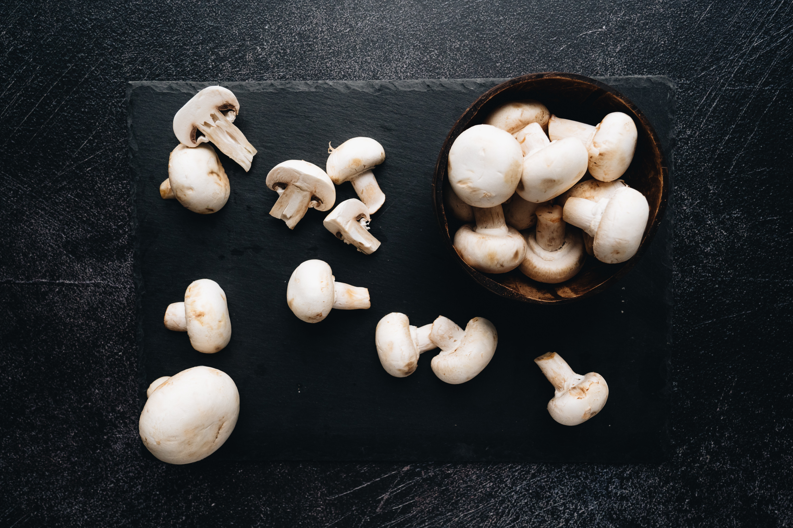
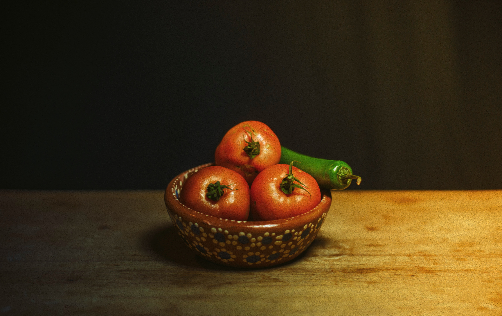

Una alimentación sana y equilibrada
Estos son los 4 pilares principales para llevar una vida saludable

Qué es la nutrición y cuál es su importancia
nutrición y hábitos alimenticios para tener una vida saludable

No exceder el consumo de azúcar
Por algo es considerado el desayuno la comida más importante del día, es el primer consumo